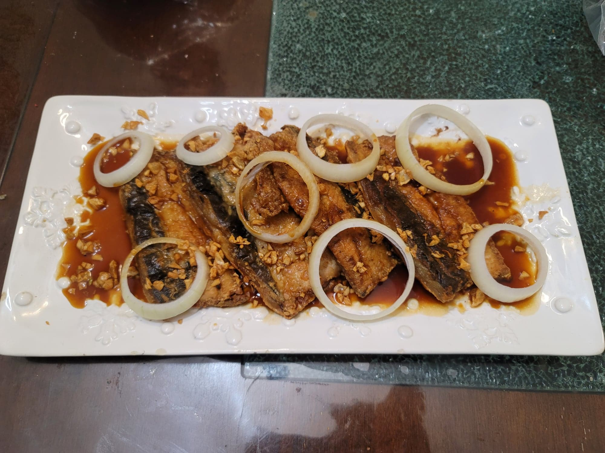

Bangus a la Pobre

Ingredients:
Bangus:
- 2 Boneless bangus belly, cut in half
- 1 head Garlic, minced
- 1/2 cup Canola oil
- Salt, to taste
- Black pepper, to taste
- 1/2 cup Flour
- 1 medium White onion, cut into 1/4 inch rings
Sauce:
- 1 tbsp Butter
- 1/4 cup Water
- 1/4 cup Calamansi juice or substitute Lemon juice
- 1/4 cup Soy sauce
- 1 tbsp Oyster sauce
- 1 tsp Brown sugar
Instructions:
- In a large pan, heat the canola oil over medium-low/medium heat. Add the garlic and let cook until golden and crunchy, stirring often. Then strain the fried garlic out of the oil and reserve.
- While the garlic fries, season the bangus with salt and pepper to taste. Then dredge the bangus in flour.
- Heat the garlic oil over medium heat. Fry the bangus in the garlic oil until golden, 5 minutes on each side. Then transfer to a serving plate.
- While the bangus cooks, begin to melt the butter in a separate saucepan. Combine the rest of the sauce ingredients and whisk until homogenous. Add to the sauce pan and bring to a simmer. Let reduce to your liking.
- Top the bangus with the reserved fried garlic and the onions. Then pour the sauce over the bangus. Serve hot.